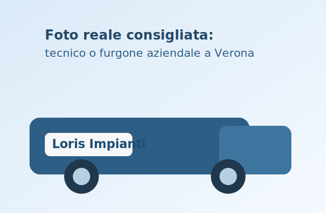

"Intervento velocissimo per una perdita in bagno. Problema risolto in giornata."
IDRAULICO A VERONA – PRONTO INTERVENTO 24H
Riparazioni perdite, impianti gas certificati e caldaie. Operiamo a Verona e provincia dal 2000.
Attivi a Verona dal 2000
- Intervento rapido in giornata
- Impianti gas certificati a norma
- Preventivi chiari, senza sorprese

Dal 2000 a Verona
Un servizio locale, fatto da persone reali
Esperienza, professionalità e interventi rapidi in tutta Verona.
Borgo Roma, Borgo Milano, San Giovanni Lupatoto, Villafranca, Bussolengo, San Bonifacio, Legnago e zone limitrofe.
Recensioni dei clienti
"Professionale e puntuale. Preventivo chiaro e lavoro fatto a regola d’arte."
"Chiamato per emergenza, arrivato in poco tempo. Consigliato."
20+ anni di esperienza
Disponibili 24h
A norma di legge
Trasparenza
Verona e provincia
Servizi idraulici a Verona
Riparazioni idrauliche
Riparazioni veloci e durature per perdite, tubazioni e rubinetteria.
Richiedi interventoImpianti idraulici civili
Installazioni su misura e a norma per abitazioni e piccoli locali.
Richiedi interventoManutenzioni e riparazioni
Controlli periodici e interventi mirati per ridurre guasti e costi futuri.
Richiedi interventoImpianti gas certificati
Installazione e adeguamento impianti gas certificati a norma di legge.
Richiedi interventoRiscaldamento e caldaie
Assistenza su riscaldamento e caldaie con interventi chiari e puntuali.
Richiedi interventoPronto intervento 24h su 24
Per perdite e guasti urgenti interveniamo rapidamente a Verona.
Richiedi interventoHai una perdita d’acqua o un guasto urgente? Evita danni maggiori. Interveniamo rapidamente.
Chiama subitoZona di intervento
Verona e provincia: Borgo Roma, Borgo Milano, San Giovanni Lupatoto, Villafranca, Bussolengo, San Bonifacio, Legnago e zone limitrofe.
Se cerchi idraulico Verona per urgenze o lavori programmati, chiama 351 794 3571.
Domande frequenti
In quanto tempo arrivate per un'urgenza?
Dipende dalla zona e dal traffico. Per pronto intervento idraulico Verona puntiamo a partire subito dopo la chiamata.
Quanto costa un intervento?
Il costo dipende dal tipo di guasto. Prima dell'intervento forniamo un preventivo chiaro, senza voci nascoste.
Fate pronto intervento 24h su 24?
Sì, gestiamo urgenze 24h su 24 per perdite e guasti che non possono aspettare.
Rilasciate certificazione per impianti gas?
Sì, realizziamo impianti gas certificati a norma di legge con documentazione prevista.
In quali zone lavorate?
Verona e provincia: Borgo Roma, Borgo Milano, San Giovanni Lupatoto, Villafranca, Bussolengo, San Bonifacio, Legnago e limitrofe.
Quali pagamenti accettate?
Accettiamo i metodi di pagamento più comuni. Confermiamo sempre modalità e dettagli prima dell'intervento.
Offrite garanzia sull'intervento?
Sì, ogni lavoro viene eseguito con attenzione e coperto secondo quanto concordato nel preventivo.
Chi siamo
Loris Impianti opera a Verona dal 2000. Lavoriamo con professionalità, trasparenza e rispetto delle normative. Interventi rapidi, preventivi chiari e attenzione al cliente per un servizio affidabile.
Serve un idraulico a Verona adesso?
Per pronto intervento idraulico Verona chiama subito. In alternativa scrivici su WhatsApp.